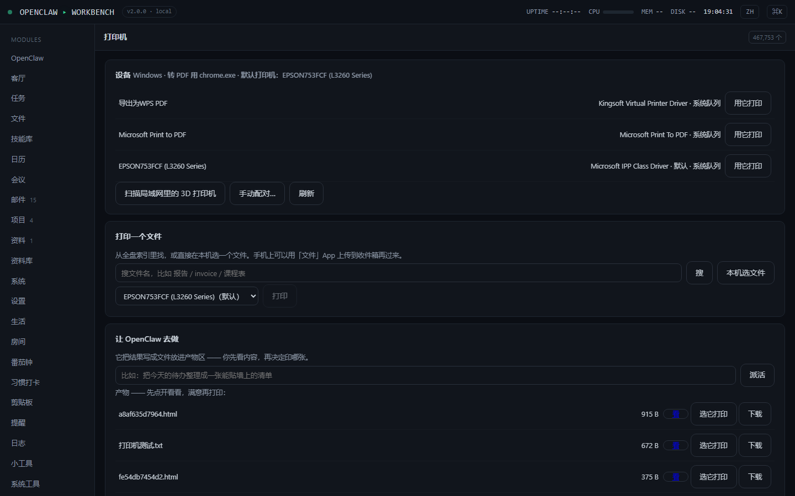
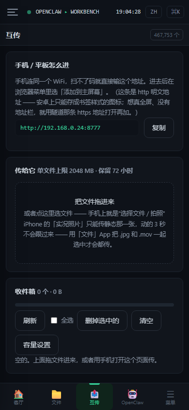

早间邮件简报
定时挑出今天要紧的邮件，需要你回的那几封自动写好草稿。你点确认才发出。
它能做什么
定时挑出今天要紧的邮件，需要你回的那几封自动写好草稿。你点确认才发出。
企业微信官方通道，在你自己的微信聊天框里发一句话，它干活，结果发回同一个框。
普通打印机自动发现；3D 打印机支持 OctoPrint / Klipper / PrusaLink，能看进度和温度。
设备间互传文件，原始字节直传不重编码，EXIF 完整保留。装成 PWA 当 App 用。
把工作台注册成标准 MCP 工具，OpenClaw 直接调用，不是照着提示词猜接口。
基于 Windows ConPTY 的真终端，手机上有 21 键触控键帽行和常用命令条。
界面


为什么是本地
只用 Python 标准库。pip install 什么都不用装，克隆下来就能跑。
邮件、文件、笔记、对话、索引全在本机 SQLite。没有云端，没有账号。
server.py 同时托管界面和处理 API，一个进程，一个端口。
真终端、真打印、真 IMAP。真机跑不通的地方我在 README 里如实写了。